Lord Jesus Feeds The Five Thousand
When Jesus heard of it, he departed thence by ship into a desert place apart:
and when the people had heard thereof, they followed him on foot out of the cities.
And Jesus went forth, and saw a great multitude, and was moved with compassion toward them,
and he healed their sick.
Matthew 14:13-14
And Jesus went up into a mountain, and there he sat with his disciples.
And the passover, a feast of the Jews, was nigh.
When Jesus then lifted up his eyes, and saw a great company come unto him, he saith unto Philip, Whence shall we buy bread, that these may eat?
And this he said to prove him: for he himself knew what he would do.
Philip answered him, Two hundred pennyworth of bread is not sufficient for them, that every one of them may take a little.
One of his disciples, Andrew, Simon Peter's brother, saith unto him,
There is a lad here, which hath five barley loaves, and two small fishes: but what are they among so many?
And Jesus said, Make the men sit down. Now there was much grass in the place. So the men sat down, in number about five thousand.
And Jesus took the loaves; and when he had given thanks, he distributed to the disciples, and the disciples to them that were set down; and likewise of the fishes as much as they would.
When they were filled, he said unto his disciples, Gather up the fragments that remain, that nothing be lost.
Therefore they gathered them together, and filled twelve baskets with the fragments of the five barley loaves, which remained over and above unto them that had eaten.
Then those men, when they had seen the miracle that Jesus did, said, This is of a truth that prophet that should come into the world.
John 6:3-14
And straightway Jesus constrained his disciples to get into a ship, and to go before him unto the other side, while he sent the multitudes away.
And when he had sent the multitudes away, he went up into a mountain apart to pray: and when the evening was come, he was there alone.
Matthew 14:22-23
- 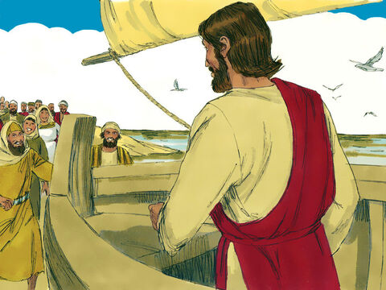
- 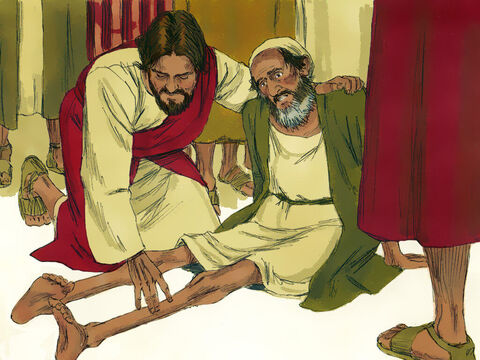
- 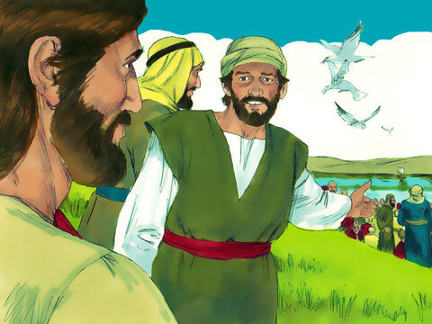
- 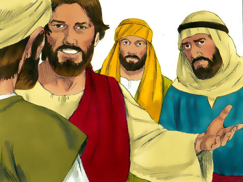
- 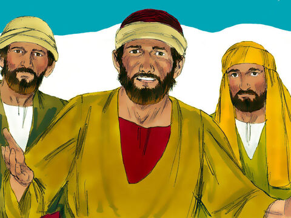
- 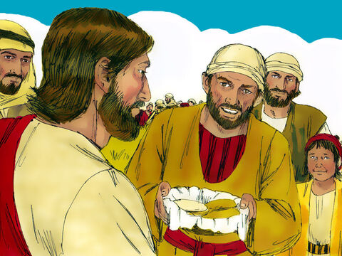
- 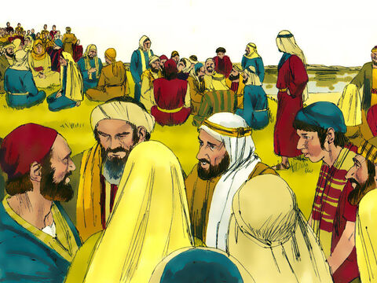
- 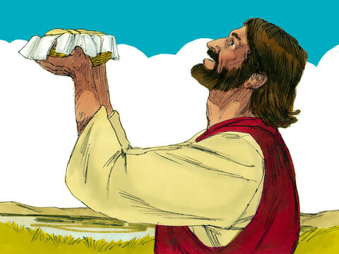
- 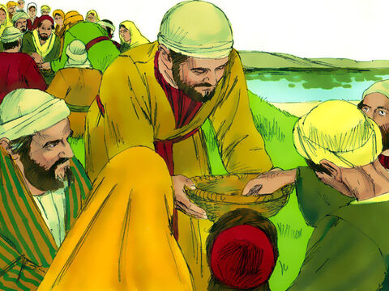
- 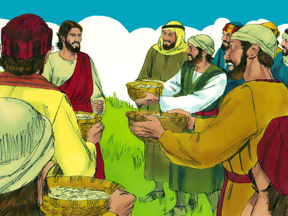
- 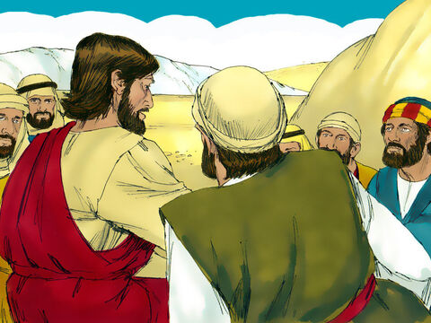
- 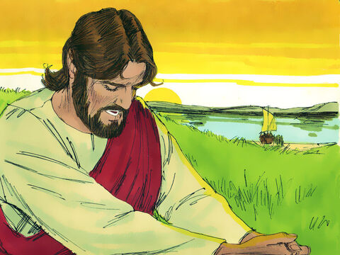